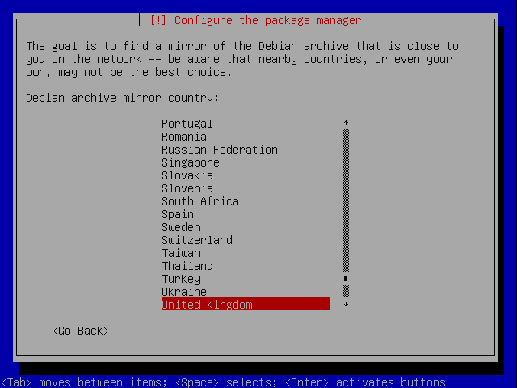
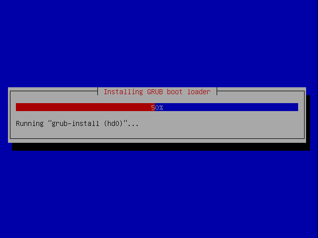

Quick Install of Debian Lenny
Recipes > Core Recipes > .. > Quick Install of Debian Lenny| Pre-Requisites: | None |
|---|---|
| Required Reading: | None |
Now we can start the base install. Select Install to start the text installer.

I speak English so that's what I choose:
Next you choose your country. The choice of country determines the mirror which will be used for packages so answer accurately. I choose United Kingdom
Select a keyboard layout:

Hardware drivers are loaded along with additional components, network drivers are loaded and then DHCP is configured if there is a DHCP server on the network.

Eventually you are asked for a hostname. So that this tutorial is consistent with other tutorials such as the ones on howtoforge.com we're going to call this server server1.example.com, so you should enter server1 as the hostname:
You should choose your own hostname.
This machine is to be accessed on the internet as doppler.3aims.com. The domain is therefore 3aims.com. You should enter your own domain. The settings can be changed later but it is worth getting them right now.
The installer performs some processing including getting the current time:

Then the partitioner starts.

Partitioning Disks
Just choose Guided Partitioning and place everything in one partition. The installer will set up the swap space.
Base Install
The base system now installs:
Users
Enter a root password:

and confirm it:

Now you need to set up a username and password for an ordinary user. First enter their name:

Then choose a username:
Next choose a password:
and confirm it:
Mirrors
Let Debian know the country you are in so it can suggest a mirror nearby:
Now select a mirror from one of the options:

Proxy
If you access the internet through a proxy, enter the details now. I don't so I leave it blank:

Apt is configured:
Apt downloads and installs any updates you need. This can take a few minutes.

The post install scripts run:
You are given the choice of participating in the popularity contest.
System Packages
You are asked which packages to install but we don't want the default. Unselect Statndard System, we'll install everything we want ourselves.

New packages are downloaded:
You are asked if you want to install Grub:

Grub is installed:
Final changes are made:

The installation is finished:
information is gathered for the final report:

The system reboots:
First of all it is far easier to install from an SSH console rather than in the Virtual Machine Manager because you can copy and paste commands.
See the Set up OpenSSH Server article.
Now continue the tutorial.
Install openssh-server:
# apt-get install openssh-server

This uses 19Mb of space. Press ENTER to continue.
You can find out the IP address with ifconfig. In my case with KVM it is 192.168.122.82. From a console on your computer connect like this:
james@dirac:~$ ssh root@192.168.122.82 The authenticity of host '192.168.122.82 (192.168.122.82)' can't be established. RSA key fingerprint is 85:2d:25:af:9c:af:27:6b:73:61:af:37:ce:d5:7f:25. Are you sure you want to continue connecting (yes/no)? yes Warning: Permanently added '192.168.122.82' (RSA) to the list of known hosts. root@192.168.122.82's password:
Enter the root password and you'll see this:
Linux server1 2.6.26-2-amd64 #1 SMP Fri Mar 27 04:02:59 UTC 2009 x86_64 The programs included with the Debian GNU/Linux system are free software; the exact distribution terms for each program are described in the individual files in /usr/share/doc/*/copyright. Debian GNU/Linux comes with ABSOLUTELY NO WARRANTY, to the extent permitted by applicable law. Last login: Mon Apr 20 00:19:22 2009 server1:~#
Now you can copy and paste commands into the terminal, without having to type out each command in full.